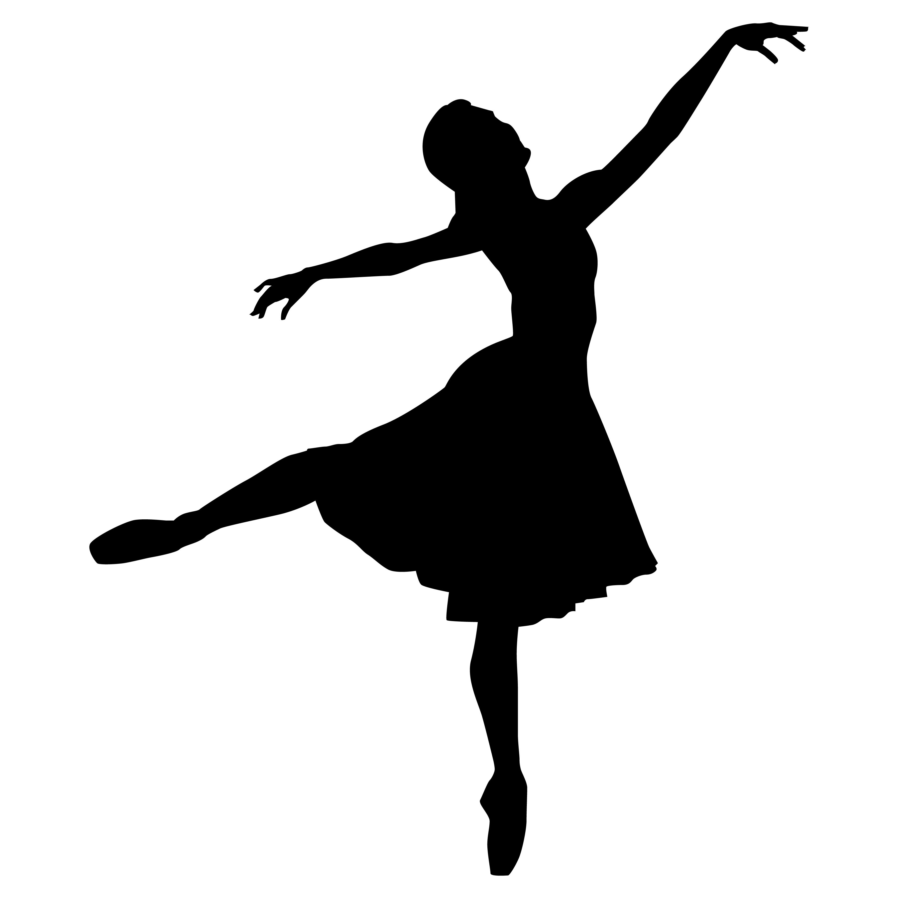
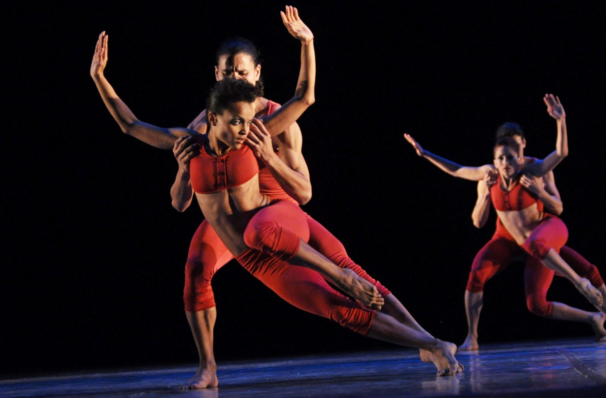
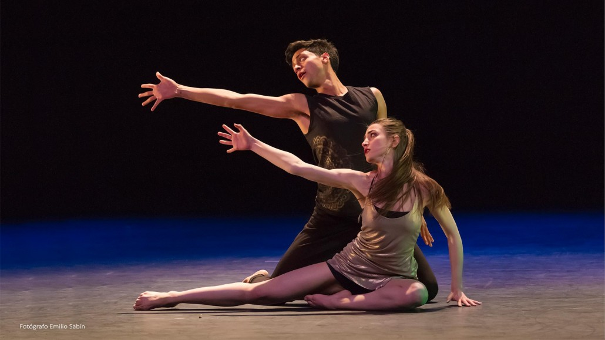

Existen muchos tipo de danza, entre los que podemos encontrar:
La danza es una forma de arte milenaria que se basa en el movimiento rítmico del cuerpo y que se encuentra directamente relacionada con la música.
La danza forma parte de las siete artes clásicas y el ser humano la practica en situaciones distintas: en el mundo del espectáculo, rituales, manifestaciones folclóricas, celebraciones, concursos, etc. Se podría afirmar que la danza tiene una doble vertiente: como un símbolo cultural y, al mismo tiempo, es una forma de entretenimiento y de evasión. En muchas ocasiones, las dos dimensiones se fusionan (un baile de graduación o el primer baile entre los recién casados serían un ejemplo en este sentido). Es una expresión natural de comunicación, una manera de transmitir sentimientos a través de los movimientos corporales. De igual forma, tiene un componente liberador y sensual. Y no hay que olvidar que está presente en la guerra y en el amor. Estos aspectos tan diversos hacen que la danza tenga una fuerza muy singular, una especie de atracción que impulsa a mover el cuerpo rítmicamente.
Existen muchos tipo de danza, entre los que podemos encontrar:
- Vals
- Tango
- Cha-Cha-Cha
- Rumba
- Samba
- Mambo
- Danza Moderna
- Danza Contemporánea
- Danzas Folklóricas
- Danzas Urbanas
|  |  |